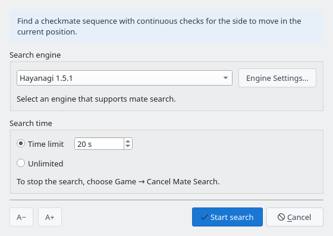
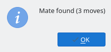
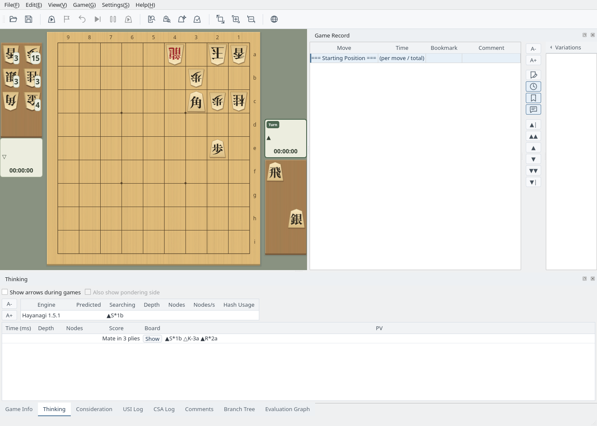
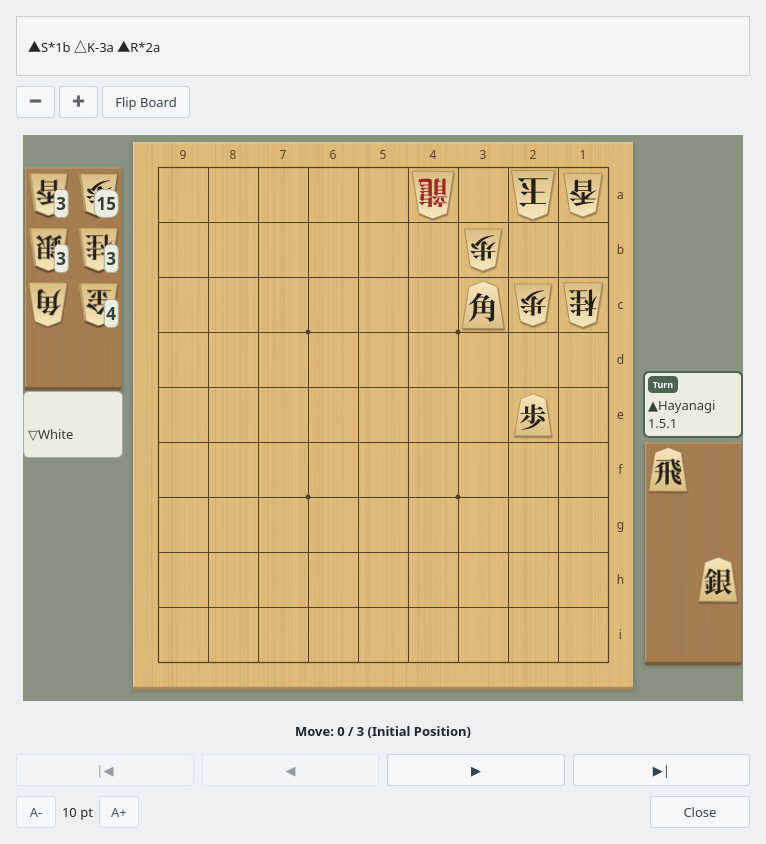
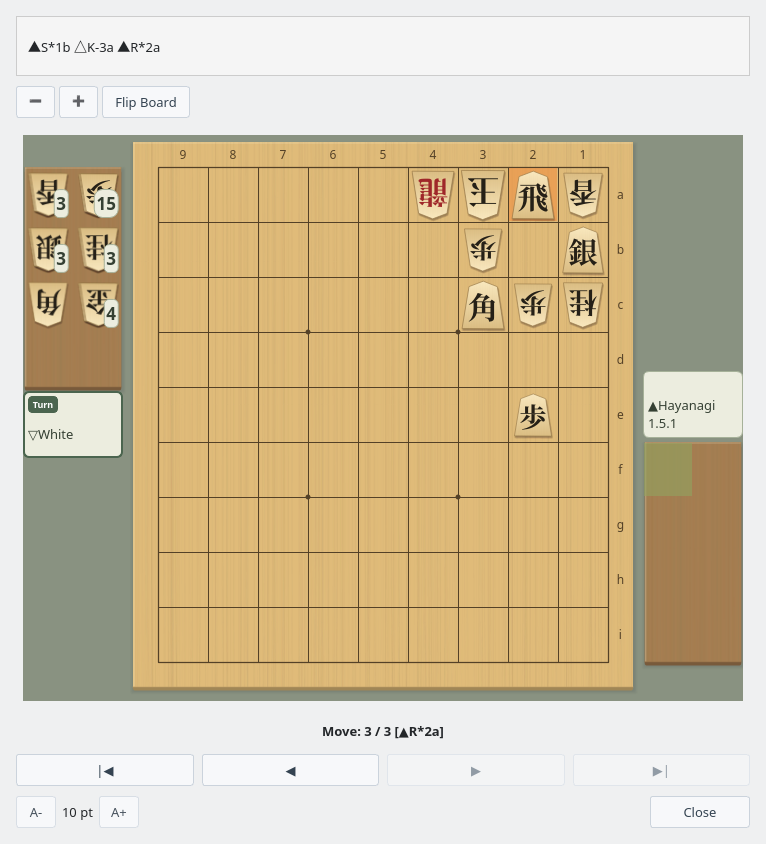

Mate Search
Use a USI engine to find out whether the current position has a mate
Screenshots were captured on Linux with the English interface.
Preparing the Position
Show the position you want to examine on the board
Show the Position
Mate search looks for a sequence of continuous checks with which the side to move mates the opponent’s king, starting from the position shown on the board. You can examine a position chosen in an opened game record or the final position of a finished game. It is not available during a game, consideration, game analysis or position editing.
To build a position from scratch, as for a tsume problem, choose Edit → Start Position Edit, place the pieces and confirm with the End Edit button (Board Editing). Make the attacking side the side to move. This guide uses the sample problem placed by Edit → Tsume Shogi Setup.
Search Settings
Choose the engine and the search time in the Mate Search dialog
Mate Search Dialog
Choose Game → Mate Search… to open the dialog, select the engine and the search time, and click Start search. The engine and time you choose are used again next time.

Mate Search dialog: choose the engine and search time, then click Start search
| Setting | Description |
|---|---|
| Search engine | Choose one of the USI engines registered under Settings → Engine Settings…. The Engine Settings… button changes the options of the selected engine. |
| Time limit | The maximum search time in seconds (20 seconds by default). |
| Unlimited | Search until the engine knows whether a mate exists. |
| A− / A+ | Change the text size of the dialog. |
Mate search needs an engine that supports USI tsume search (go mate). You can register ShogiBoardQ’s Hayanagi (bundled with the Linux version only; see the Hayanagi guide) or KomoringHeights, a tsume shogi engine developed and published by komori-n. See Registering an Engine for how to register an engine.
To stop a search, choose Game → Cancel Mate Search. A canceled search ends without showing a result.
Search Results
When the search ends, the result is shown and the mating line stays in the Thinking tab
Result Message
When the search ends, a message shows the result.

Result message: Mate found (3 moves)
| Message | Meaning |
|---|---|
| Mate found (N moves) | A mate was found. N is the number of moves to mate, including the defender’s replies. |
| No mate | The engine proved that continuous checks cannot mate. |
| Could not determine mate within the time limit | The engine could not decide within the time limit. Allow more time or search again with Unlimited. |
| (Engine) Not implemented | The selected engine does not support mate search (go mate). |
Mating Line in the Thinking Tab
When a mate is found, a row with the mating line is added to the Thinking tab. The Score column shows the length of the mate, such as “Mate in 3 plies”, and the PV column shows the moves.

Thinking tab: the score is “Mate in 3 plies” and the PV shows the mating line
Principal Variation Board
Replay the mating line move by move on a board
Open the Principal Variation Window
Click Show in the Board column of the mating line row to open the principal variation window. It shows the mating line at the top and the searched position below.

Principal variation window: starting position (Move 0 / 3)
Replay the Mating Line
Click ▶ to advance one move, or ▶| to go to the mating position. The last move is highlighted on the board, and the move counter shows which move is displayed.

Principal variation window: mate with ▲R*2a (Move 3 / 3)
| Button | Action |
|---|---|
| |◀ / ▶| | Go to the starting position / go to the last (mating) position |
| ◀ / ▶ | Go back one move / forward one move |
| − / + | Shrink / enlarge the board (Ctrl + mouse wheel over the board also works) |
| Flip Board | Rotate the board 180 degrees |
| A- / A+ | Change the text size of the window |